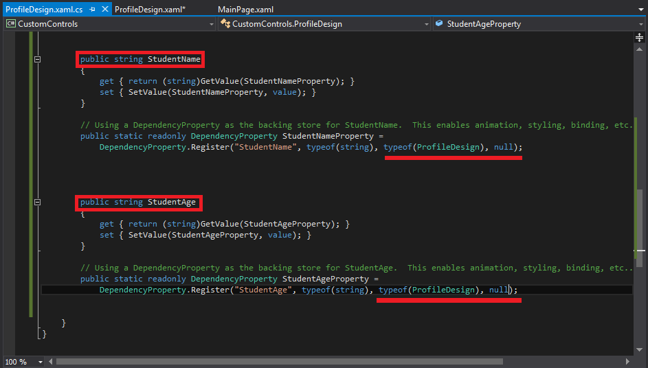
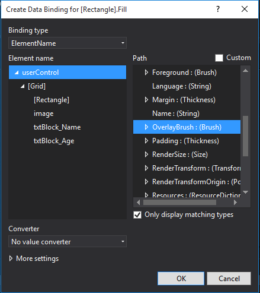
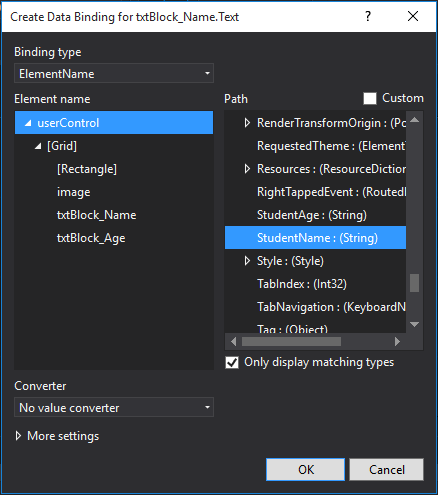

Creating Custom Controls in Universal Windows Platform UWP
Why we need custom controls?
Microsoft Blend Provided you the different controls that you can use in your application style, layout and animation. Let suppose you have to design profiles of 80 students of computer science batch. What you need every time to design profile.
- Rectangle
- Image Control
- TextBlock for Name
- TextBlock for Age
This will take average 35-40 seconds every time drag and drop of controls then changing content of each student. Approximately 55 minutes required for same basic steps of 80’s students profile design. Here comes a think why not we create a custom control named “ProfileDesign” that would be composite of all required control for profile design by programming a class that inherits from one of the System.Windows.Controls classes of Windows Presentation Foundation (WPF) or Microsoft Silverlight. To include properties in our custom control that can be modified in the Properties panel of Blend, we define dependency properties in your class. So That we just drag and drop ProfileDesign control every time and update its properties respectively to each student. This is will reduce your attention and half the total time required as using generic method.
Now Let’s starts how to create custom controls!
Please hold on before starting, be attentive, you have to focus just five minutes of your life and after that this technique or the versatility of Blend, I assured you will save your many hours of life.
Setp1:
In Blend 2015 create your windows universal blank app project here named it CustomControls.

Step 2:
Add new user control named ProfileDesign. For user control right click on you project click on add - -> new item - - > user control.

Step 3:
Now in ProfileDesign Control we have to design the Rectangle, Image Control and two text Blocks for name and age respectively.

Step 4:
Now we have to define the dependency propertied of these controls so that we can use these for data binding later. Open your class ProfileDesign.Xaml.Cs you will get by expanding ProfileDesign.Xaml. For creating dependcy properties write propdp,press tab twice.
1st For Rectangle properties we have use the Brush Property Name OverlayBrush,In typeof owner class name of the property (ProfileDesign) and then null the meta data, the data before the actual data.
2nd For the Image property we will use the ImageSource, Property name ProfileImage, update the owner class name (ProfileDesign) and metadata null.
3rd for the textBlocks Student name and age use string and named StudentName, StudentAge respectively with same owner class (ProfileDesign) and null meta data.


Press Ctrl+s, Ctrl+Shift+B.
Step 5 :
Now binding the controls. Select the Image control form objects and timeline, in Properties Source, create databinding, databinding name, Element Name. Select User Control and in Path the name of property in our case ProfileImage. Respective properties for others controls as shown in inmages.






Then Build the solution Ctrl+Shift+B.
Step 6:
As Builded, go to the MainPage.xaml. In Assets let see, is my control available there?

Now just drag and drop on main page. Go to properties. Remember all of the properties of our custom control except the brush are in the miscellaneous tab.
I have added the six ProfileDesign Controls in Main Page at miscellaneous tab click on Profile Image add the image. Student Name and Student Age.


Now go to the brush tab, Overlay Brush and chose your color.

So there is your custom control. After that I have design five new profile of my fellows just in one minutes. Simple drag and drop the ProfileDesign Control from and Update the contents.

You can do anything with your custom controls such as, styling, data binding, animation.
Below is the link of hands on work code.Keep learning...!!
https://code.msdn.microsoft.com/Creating-Custom-Controls-a031a7ea/https://github.com/samarkhan140/CustomControls